Countershaft Reassembly
Countershaft ReassemblyCountershaft:
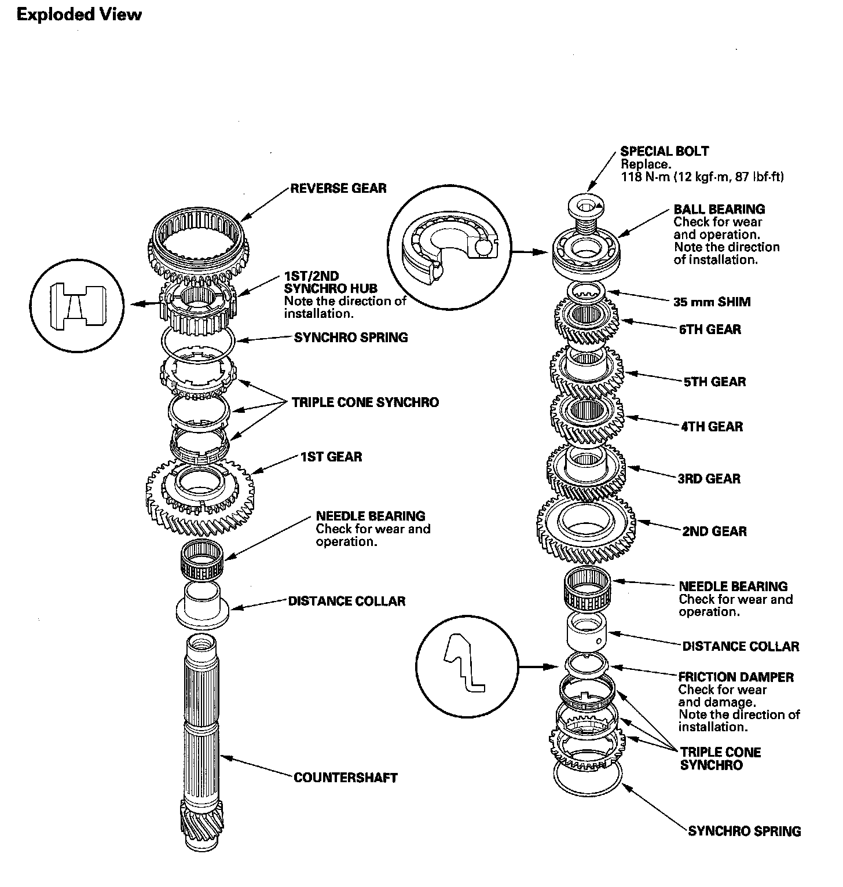
Special Tools Required
^ Driver handle, 40 mm I.D. 07746-0030100
^ Driver handle, 30 mm I.D. 07746-0030300
NOTE: Refer to the Exploded View, as needed, during this procedure.
1. Clean all parts in solvent, dry them, and apply MTF to all contact surfaces.
2. Install the distance collar and needle bearing onto the countershaft.
3. Install the 1st gear.
4. Install the triple cone synchro assembly (A) by aligning the synchro ring fingers (B) with the grooves in 1st gear (C), then install the synchro spring (D).
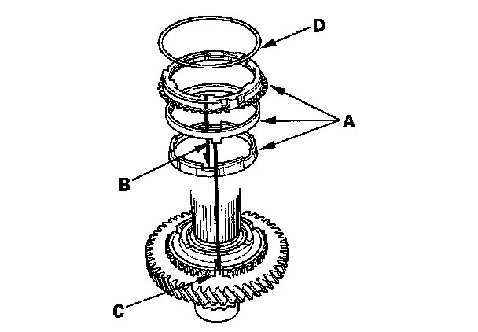
5. Install the 1st/2nd synchro hub (A) by aligning the synchro ring fingers (B) with the grooves in the 1st/2nd synchro hub (C).
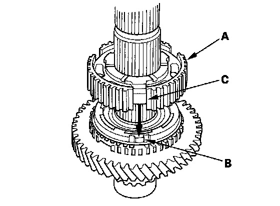
6. Install reverse gear.
7. Install the synchro spring (A).
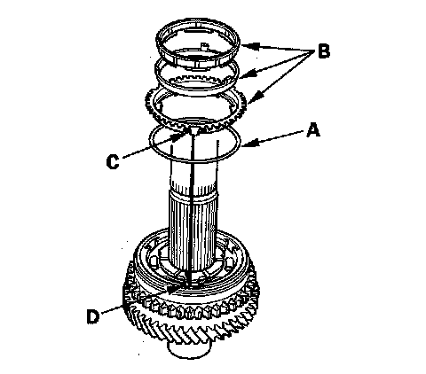
8. Install the triple cone synchro assembly (B) by aligning the synchro ring fingers (C) with the grooves in the 1st/2nd synchro hub (D).
9. Install the distance collar (A) and friction damper (B) by aligning the friction damper fingers (C) with the grooves in the 1st/2nd synchro hub (D).
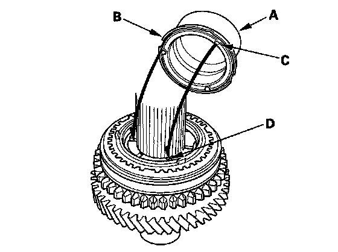
10. Install the needle bearing.
11. Install 2nd gear (A) by aligning the synchro cone fingers (B) with the grooves (C) in 2nd gear.
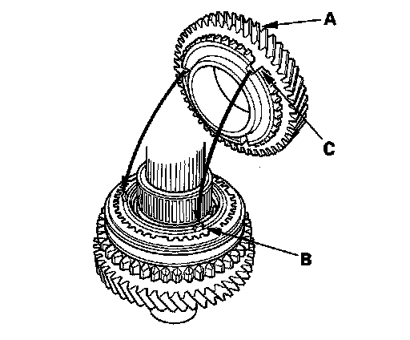
12. Support the countershaft (A) on steel blocks, then install 3rd gear (B) using the 40 mm I.D. driver (C) and a press (D).
NOTE: Do not exceed the maximum pressure.
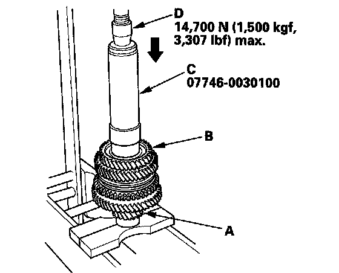
13. Install 4th gear (A) using the 40 mm I.D. driver (B) and a press (C).
NOTE: Do not exceed the maximum pressure,
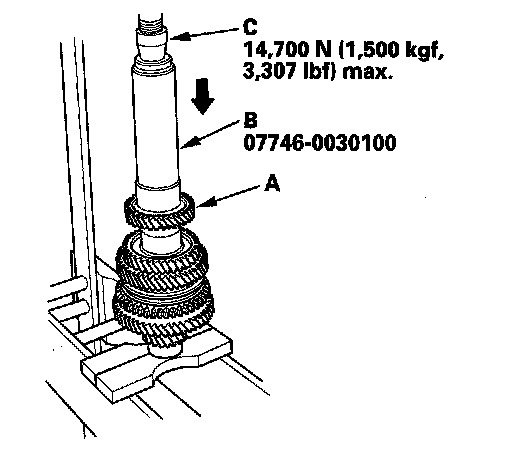
14. Install 5th gear (A) using the 40 mm I.D. driver (B) and a press (C).
NOTE: Do not exceed the maximum pressure.
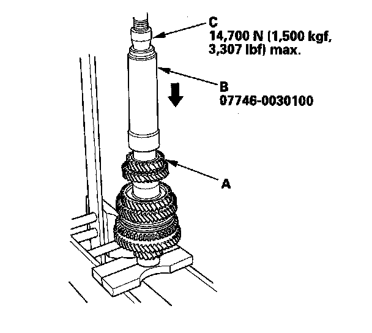
15. Install 6th gear (A) using the 40 mm I.D. driver (B), 30 mm I.D. attachment (C), and a press (D).
NOTE: Do not exceed the maximum pressure.
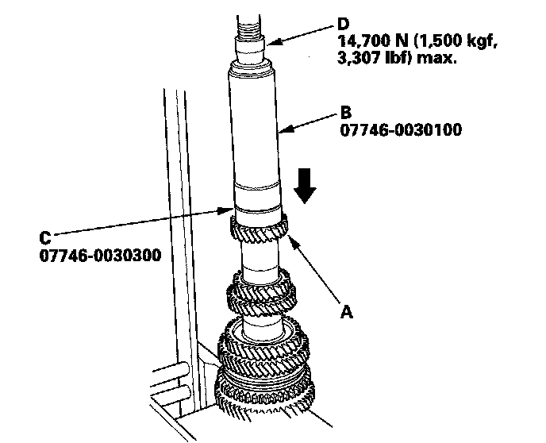
16. Install the 35 mm shim and the old ball bearing (A) using the 40 mm I.D. driver (B), 30 mm I.D. attachment (C), and a press (D).
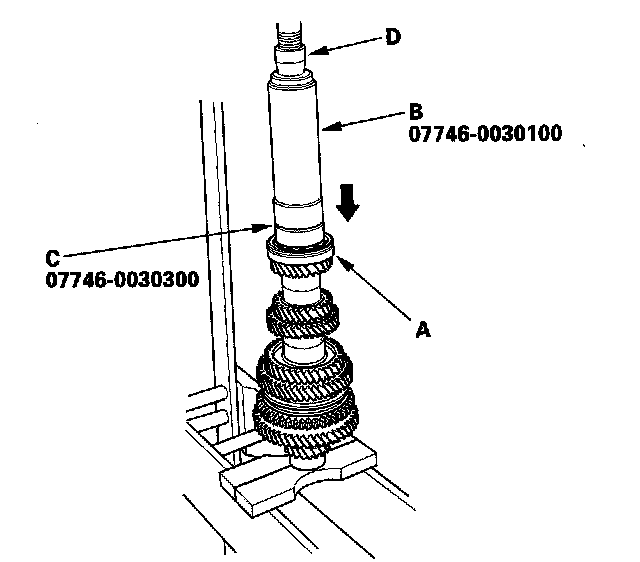
17. Measure clearance between the old bearing (A) and the 35 mm shim (B) with a feeler gauge (C).
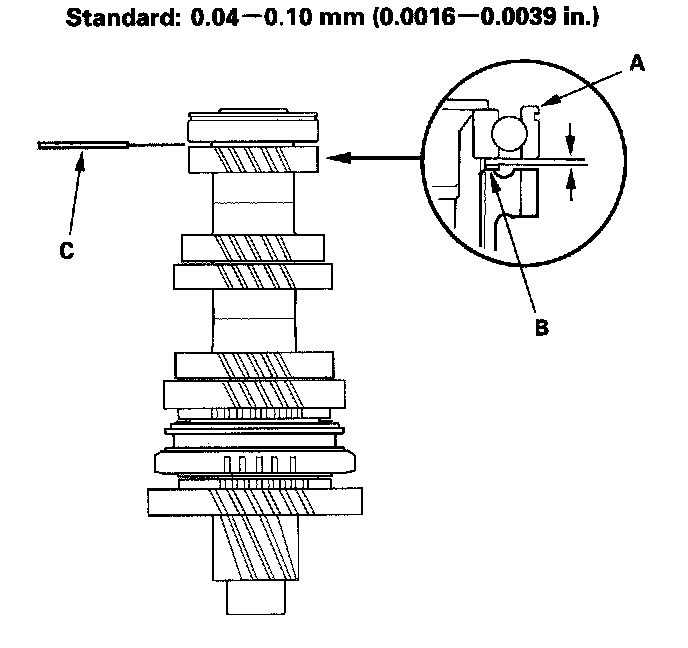
18. If the clearance is more than the standard, select a new shim from the following table. If the clearance measured in step 16 is within the standard, replace only the ball bearing.
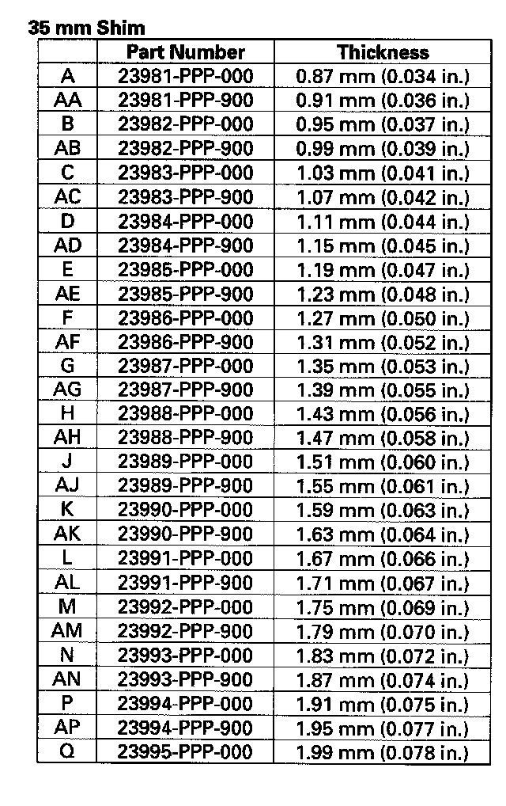
19. Support 6th gear (A) on steel blocks (B), then use a press (C) and an attachment (D) to press the countershaft out of the ball bearing.
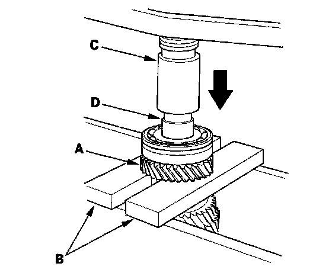
20. If necessary, install the 35 mm shim selected in step 18.
21. Install 6th gear (A) using the 40 mm I.D. driver (B), 30 mm I.D. attachment (C), and a press (D).
NOTE: Do not exceed the maximum pressure.
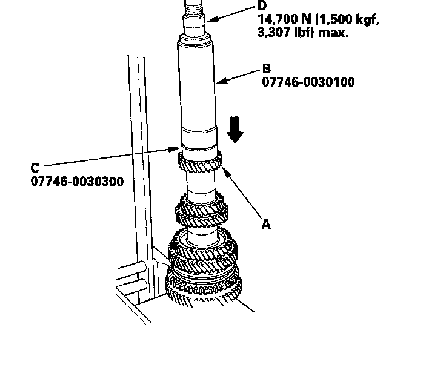
22. Install the new ball bearing (A) using the 40 mm I.D. driver (B), 30 mm I.D. attachment (C), and a press (D), then recheck the clearance.
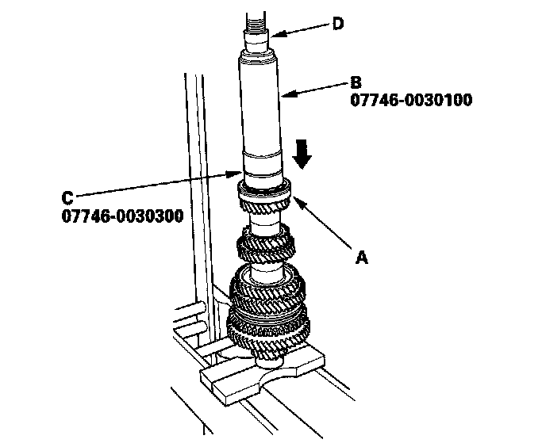
23. Securely clamp the countershaft assembly in a bench vise with wood blocks (A).
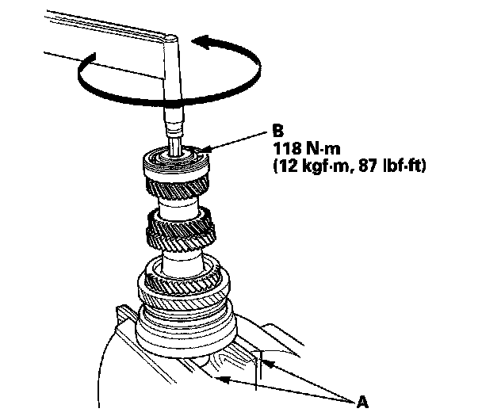
24. Tighten the new special bolt (B) (left-hand threads).